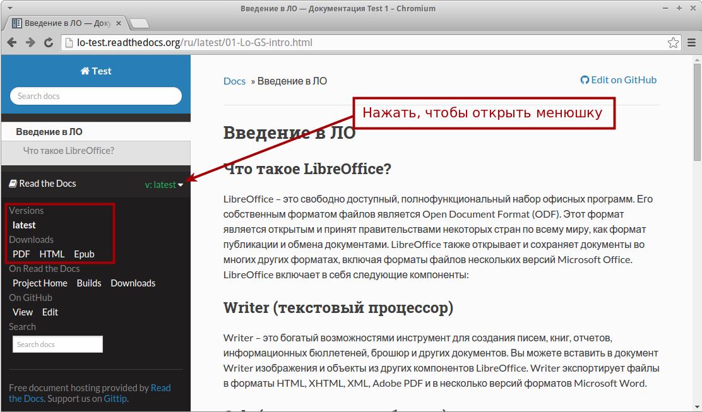

Пособие: Оформление дипломной работы в LibreOffice (3-издание)
Третье издание пособия содержит ряд правок. В большинстве случаев, они касаются ссылок на дополнительные ресурсы по тем или иным вопросам. В силу развития LibreOffice были обновлены некоторые снимки экрана.
Была добавлена глава «Шаблон оформления конструкторской документации (ГОСТ ЕСКД — рамки А4)», этот вопрос очень часто задается пользователями.
И самое главное новшество заключается в использовании при верстке пособия связки reStructuredText, Python-Sphinx, Git, GitHub, Read the Docs. Благодаря этому, руководство теперь доступно в четырех форматах — онлайн, HTML, PDF, ePub.
Не забываем про возможности сервиса Read the Docs:

Просьба не давать ссылку на GitHub. Обо всех изменениях в ссылках будет сообщено в этой статье.